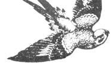
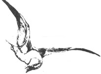
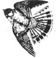

Wouldn't it be great if you could somehow immunize your plants against diseases, just as people can be vaccinated against polio, tetanus, and so forth? Well, recent research has shown that plant immunization is indeed feasible. Plant pathologists at the University of Kentucky have injected certain compounds into potato, green bean, cucumber, watermelon, and other crop plants, giving them immunity to various bacterial, fungal, and viral diseases for up to six weeks!
The immunizing compounds (in particular, beta glucans) apparently speed and strengthen the plant's own generalized immune responses. This goes along with the theory that disease resistance is largely the ability to quickly recognize and respond to pathogens rather than a matter of having special "antidisease" genes.
Currently, the immunizing compounds are most often injected into crops . . . but they have been successfully sprayed on some (for example, cucumbers). And the Kentucky researchers are even working toward seed inoculations that would produce immunized plants without the need for in-garden treatments.
Unfortunately, immunization is not passed on genetically to subsequent generations, so the procedure must be repeated each season. On the other hand, a bit of tissue from a treated plant can be grafted on a nontreated one of the same species to confer immunity on that second plant. And the six-week resistance period can be extended for as long as the plant lives by occasionally challenging the immune system with pathogens (which stimulate a "booster" response).
Horticulturists at several other institutions besides the University of Kentucky are working on plant vaccinations. In fact, a recent report by the Weyerhaeuser Company claims that perennials such as apple, pear, prune, and coffee trees have been protected for up to three months with immunizations.
The technique is still experimental, but the results to date are extremely promising. Immunization has an almost unlimited potential for controlling plant diseases. And in general, the vaccination compounds being tested are derived from natural products.
How long will it be before such treatments become commercially available? We don't know, of course, but suspect that in only a few years you will be able to buy immunized seeds or immunizing sprays for your own garden.
Watch out for ZYMV! If you grow cucumbers, squash, melons, or pumpkins, your garden might be visited by zucchini yellow mosaic virus (ZYMV) - sooner than you'd like! The aphid-transmitted curcurbit virus reduces yields and results in misshapen, lumpy, discolored fruits (which, however, are perfectly safe to eat). ZYMV was first discovered in Italy in 1981. Now it has spread to much of the U.S., including Arizona, California, Connecticut, Florida, Minnesota, New Jersey, and New York. Researchers are searching for resistant cultivars, but in the meantime, we might have to learn to like ugly cucumbers!
Another reason to grow cover crops. Russian experiments have shown that certain plant residues can inhibit the development of harmful soil-dwelling nematodes. Various plants were grown in soil heavily infested with the nematode Xiphinema americanum; the aboveground parts of the plants were mashed and tilled in at the end of the growing season. Best nematode control was seen with rye, barley, corn, wheat, and millet crops. Chicory, alfalfa, timothy, and perennial rye grass also reduced nematode populations (by up to about 90% However, clover, mint, chickweed, dill, celery, peas, beans, raspberries, and apples actually stimulated nematode development. (For more on cover crops, turn to page 42.)
Updating the Zone Map. Dr. H. Marc Cathey of the U.S. National Arboretum (28th and M Streets N.E., Washington, DC 20002) is calling for serious plant enthusiasts-professional and amateur-in all parts of the U.S. and Canada to fill out questionnaires that will help him update the U.S.D.A. Hardiness Zone Map (the one reproduced in color in many seed catalogs). The result will be a Plant Performance Guide that should be much more useful than the old Zone Map. Write to Dr. Cathey for details.
BT additives. Egyptian research shows that the effectiveness of the biological insecticide Bacillus thuringiensis can be increased markedly (at least when used to combat armyworms) by adding small amounts of fairly innocuous chemicals. Additives that seem particularly effective include zinc sulfate and calcium oxide. (Previous work indicated that boric acid helps BT knock out gypsy moths.) Additional research is needed before such BT-boosting is approved by the EPA.
End blossom-end rot. Research at California Polytechnic University has shown that persistent high humidity makes tomatoes prone to developing blossom-end rot: The moist conditions reduce calcium transport to the fruits. But high humidity only at night favors calcium transport and reduces the rot.
Keep birds from fruit. Commercial fruit growers have been experimenting for some time with using stretched audio recording tape to scare off birds. Consensus is building that it does help protect ripening fruit . . . either because wind-blown tape sets up a vibration which frightens birds or because they stay away to avoid becoming entangled. You can now buy products like "Scareaway Bird Line" from George Skinner (P.O. Box 329, Vista, CA 92082; free price list) or, better yet, simply experiment with audio recording tape on your own. According to Skinner, you should stretch the tape taut on rows of round stakes set 15 feet apart. The rows should run at right angles to the prevailing wind direction and be placed either approximately 18 inches from the crop or 25 inches apart from each other. To protect a single large tree, rig a "Maypole" tape arrangement over it.
New "lite" corn? According to Sunseeds (9531 W. 78th St., Suite 229, Eden Prairie, MN 55344), its new corn cultivar "Sweetie" not only tastes 20% sweeter than regular supersweet varieties, but also has 30% fewer calories . . . making it the first - get this - "diet" sweet corn!
Companion plant extracts. A biologist at Southampton University in England reports that alcohol extracts of hyssop, rosemary, sage, thyme, and white clover helped protect cabbage leaves from the diamondback moth ( Plutella xylostella ) and the large white cabbage butterfly ( Pieris brassicae ). Combine those findings with previous European field work which indicated that nearby companion plantings of these herbs do not help protect crops and Swedish experiments showing that insect-affecting chemicals in plants are emitted in very small amounts unless the plants are wounded . . . and what do you get? The notion that the best way to use natural insect deterrents may be to spray them directly on plants! This solves the problem of how to locate perennial companions in an annual garden: Give them their own separate - and permanent - area, then spray extracts of their leaves on your crops!
EDITOR'S NOTE: Greg and Pat Williams raise most of their own food on a small farm and publish HortIdeas , a fine newsletter on gardening research and products (available for $10 a year from G. & P. Williams, Rt. 1, Box 302, Gravel Switch, KY 40328).
|
 |
 |
 |
|
|
|
|